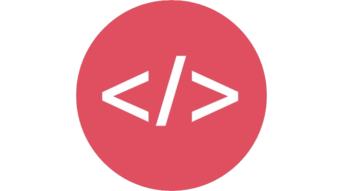
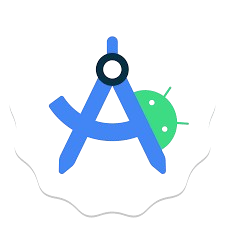

Hi, Krish Here!
I'm a Passionate

Past Learnings

Started Coding at 2021
I first heard about coding around three years ago and developed an
interest in Computer Science, so I began learning it.
Exploration of Programming Languages
I explored various programming languages during my early years of
coding, such as Java, C, C++, C#, Python, and more.

Exploration of Development Fields
I explored various fields that I discovered during my first years
of coding, such as Android development, web development, game
development, frontend development, backend development, and more.
Started Actual Coding
I initially learned the C language because, after gathering
information about coding, I understood that C is a foundational
language. Therefore, I began by studying C.
Learned FrontEnd Development
After learning the C language, I began studying web development
and discovered that it consists of three parts: frontend, backend,
and full-stack development. I chose to focus on frontend
development and learned HTML, CSS, and Tailwind

Started Coding at 2021
I first heard about coding around three years ago and developed an
interest in Computer Science, so I began learning it.